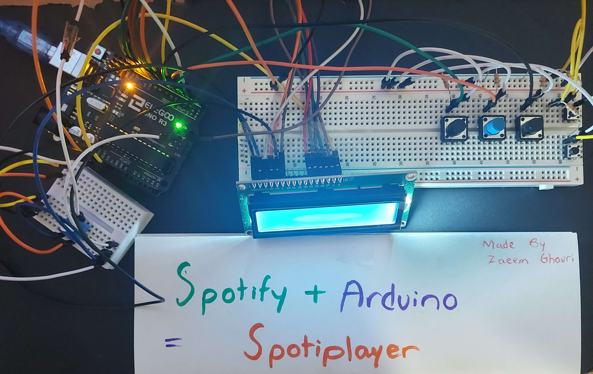
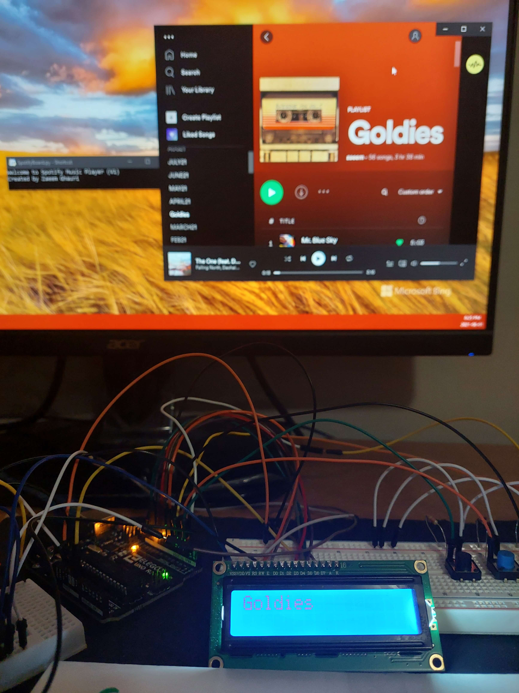

Images




This is a device that allows the user to control their Spotify music playback with the help of Arduino and Python. It allows the user to choose their playlist, go back and forth between songs, pause/resume playback, and control the volume all from their fingertips. During playback, the LCD will also flash the name of the song being played as well as the artist(s) that made it.
The device works by having the Arduino send an instruction to Python which sends a request to the Spotify web server allowing for changes in your music playback. Each button on the board is wired to a different Arduino digital input pin allowing for the Arduino to distinguish each button press from the other. After a button is pressed, the Arduino will send the corresponding instruction to Python through UART communication. Python will then decipher the instruction and perform the corresponding action through JSON request to/from the Spotify web server.
This is a project I’ve been wanting to work on since the beginning of my summer! A device that allows me to control my Spotify music within hands reach, and without any interruptions to the work I’m doing on my PC. At first I wasn’t sure how exactly I was going to go about doing this. I already knew how to communicate between microcontrollers and Python through my 3D Mapper project, but I now had to communicate from Python to my Spotify application. Thankfully, it only took a couple of Google searches for me to learn that my solution was JSON and web requests. I started with this video that taught me to develop an application that uses Python to update your Spotify playlists. With the help of the SpotifyforDevelopers website I understood the extent of what requests I could make and started planning the capabilities of my player.
At first the device was just supposed to go back and forth between songs and pause/resume playback. But after scrolling through the SpotifyforDevelopers website I became more ambitious. I decided to add an LCD screen that displays your playback information and allows you to choose your playlist, as well as two buttons to control the volume of your playback. I still plan to make a “lite” version of this project that removes the LCD and volume buttons, but that's not too high up on my priority list.
This is another project I’m very pleased with. It was the first “big” project I’ve attempted since the 3D Mapper and I’m glad I found the time to work on and complete it between summer school, friends, and family. Definitely going to make some improvements to this in the future so be sure to come back for an update!
Visit my GitHub repo for the project’s code and more information.